Bring the feet together and stand with the body aligned upright; let both open hands hang at the sides of the body. Gaze forward. (Figure 2-1.)
Step the left foot one step horizontally to the left, leaving the feet slightly more than shoulder-width apart; at the same time, draw in both open hands and hold them at the dantian (lower abdomen), with the right palm on the outside. After the posture has been set, remain still. Determine the number of breaths yourself. (Figure 2-2.)
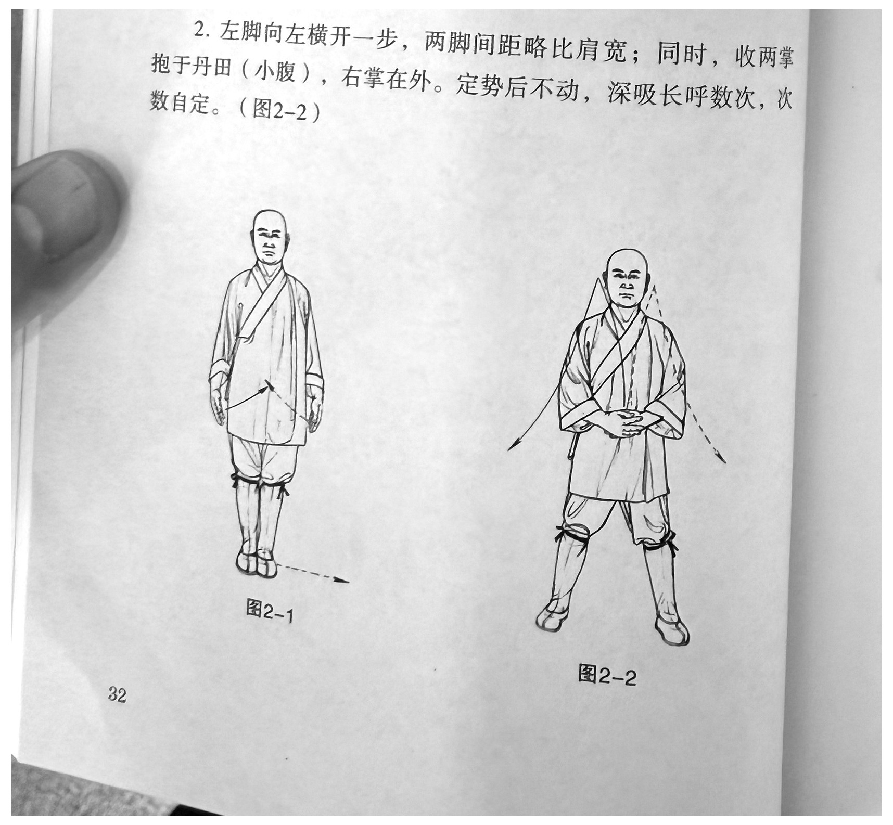
Inhale deeply through the nose; separate the two open hands and lift them upward, palms facing down, to approximately ear level. Immediately afterward, make a prolonged exhalation through the nose; slowly spread both arms open toward the sides and place the hands outside the hips, palms facing outward and the tiger’s mouths—the thumb–index webs—directed backward. (Figure 2-3.)
Lift both open hands outward and upward while extending the arms, palms facing up and fingertips pointing outward, at shoulder height. (Figure 2-4.)
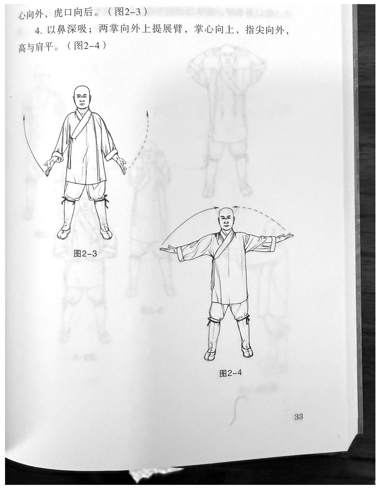
Bend the elbows and bring the two open hands inward toward one another in front of the forehead, fingertips facing each other and palms facing down. (Figure 2-5.)
Press both open hands downward along the front of the face, passing in front of the chest and continuing to the lower abdomen. (Figure 2-6.)
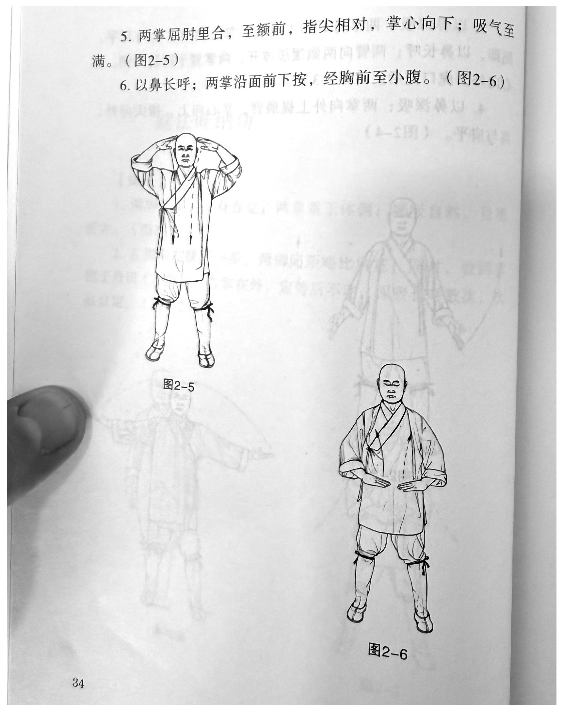
Externally rotate both open hands so the palms face up, then lift them in front of the armpits, fingertips pointing forward. Gaze forward. (Figure 2-7.)
Turn the hands, extend the arms forward, and push out. Keep the wrists at shoulder height, with the palms facing forward and the fingertips pointing upward. (Figure 2-8.)
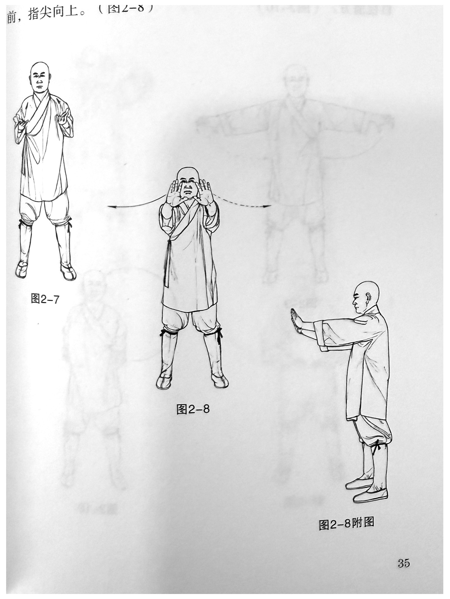
Open the arms and separate the two open hands to the left and right at approximately shoulder height, with the tiger’s mouths directed downward and the palms facing backward. (Figure 2-9.)
Curl the fingers of both hands to form fists and draw them downward to the waist, with the palm sides of the fists facing up. Gaze forward. (Figure 2-10.)
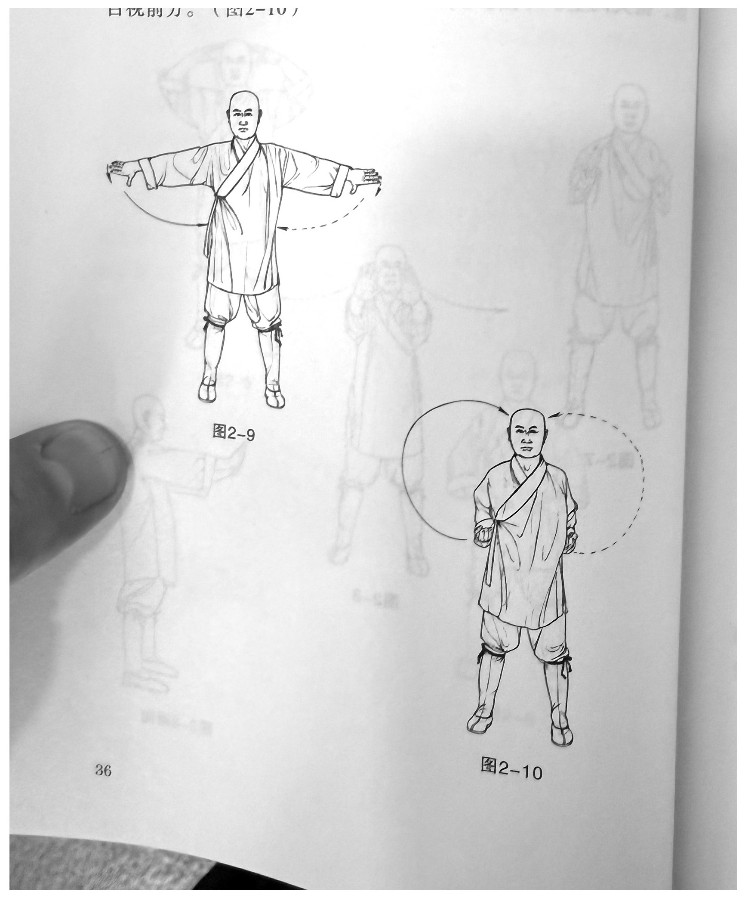
Open both fists into open hands and raise them in arcs from the sides of the body to the front of the forehead, palms facing down, all five fingers spread, and fingertips facing one another. (Figure 2-11.)
Press both open hands downward past the chest until they are in front of the lower abdomen. (Figure 2-12.)
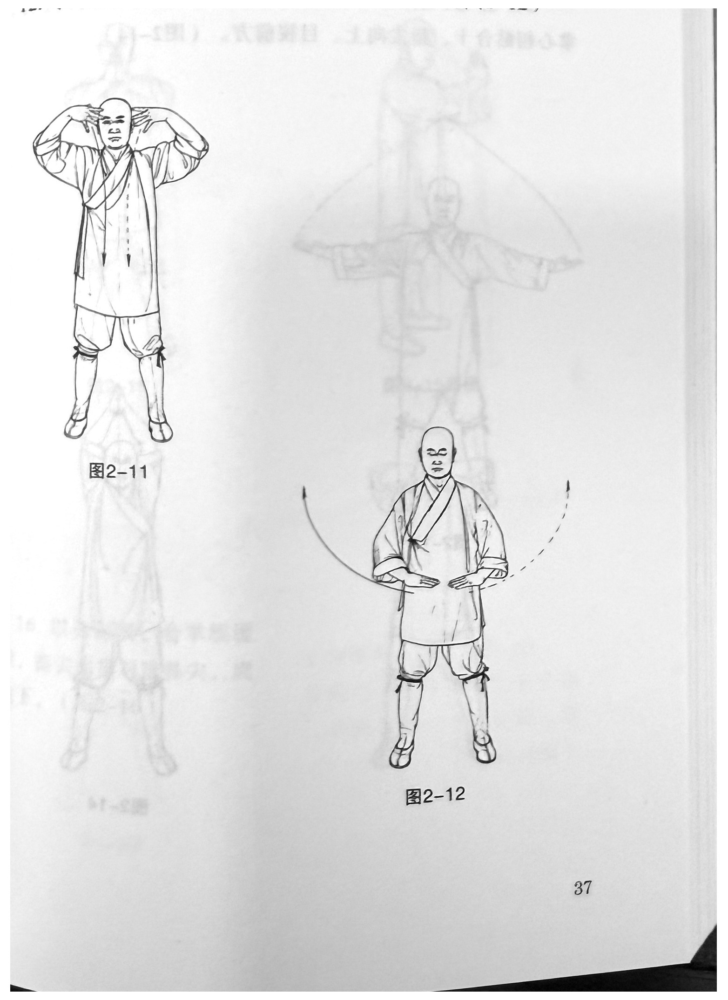
Separate the two open hands to the left and right and extend the arms at shoulder height, palms facing up and fingertips pointing outward. (Figure 2-13.)
Continue raising both open hands from the sides in arcs until they are above the head. Place the two palms together in heshi, fingertips pointing upward. Gaze forward. (Figure 2-14.)
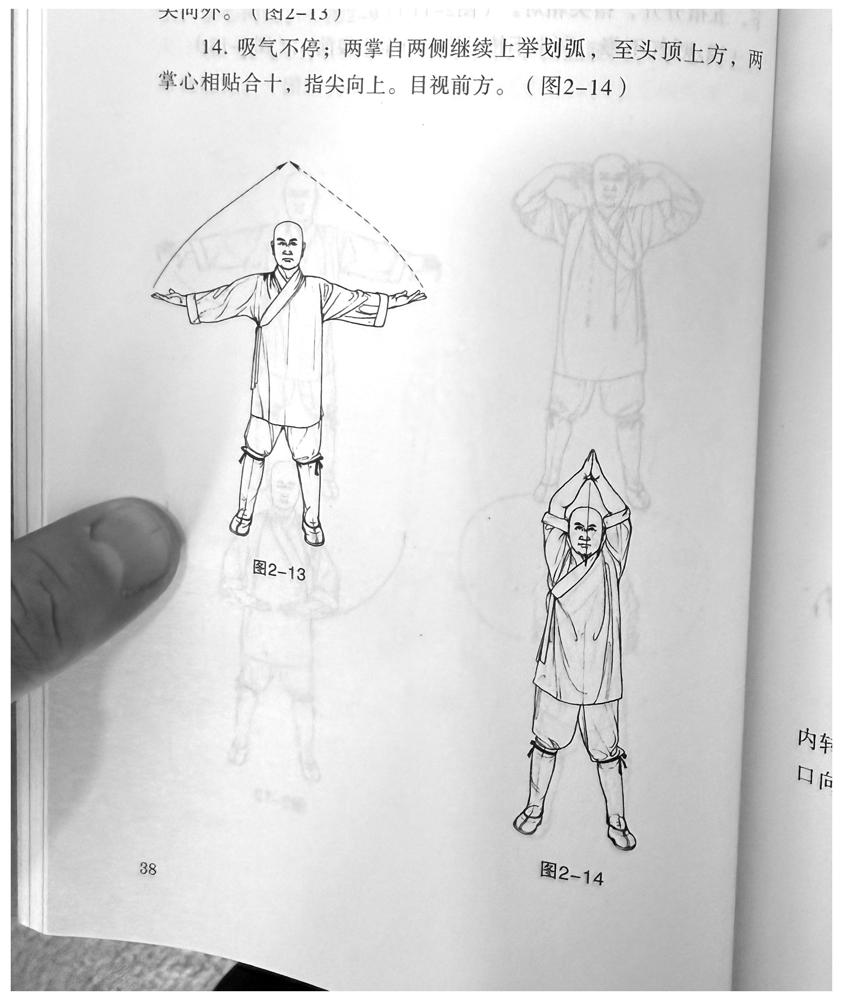
Keeping the palms joined, bend the elbows and sink the arms. Keep the elbows level with the shoulders; the tips of both middle fingers are approximately level with the tip of the nose, and the two arms form a half-arc. (Figure 2-15.)
Slowly rotate the joined palms inward so the fingertips point inward and align with the tip of the nose, with the tiger’s mouths directed downward. (Figure 2-16.)
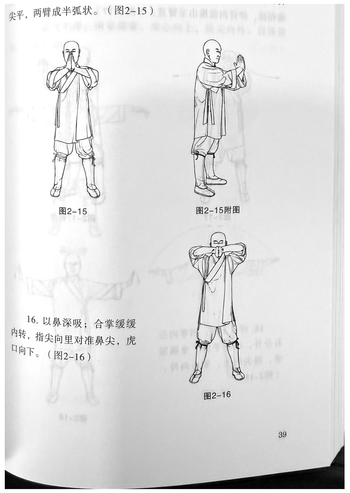
Separate the heels of the two palms, with the palms facing forward, the thumb tips facing one another, and the index-finger tips meeting. Extend the arms and push forward until the arms are straight. (Figure 2-17.)
Separate the two open hands to the left and right, with both wrists at shoulder height. Set the wrists in extension (zuòwàn) so the palms stand vertical, fingertips pointing upward and palms facing outward. (Figure 2-18.)
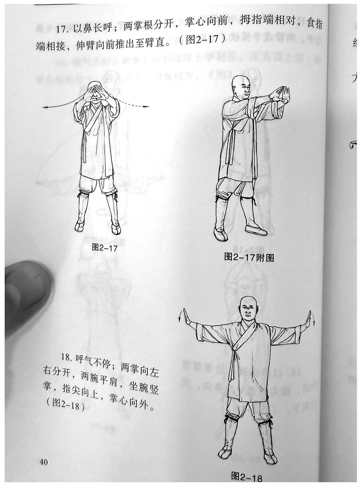
Sink both open hands and extend the palms and fingers horizontally, so that the shoulders, arms, and hands form one straight line. (Figure 2-19.)
Turn both open hands over so the palms face up and the fingertips point outward. Gaze forward. (Figure 2-20.)
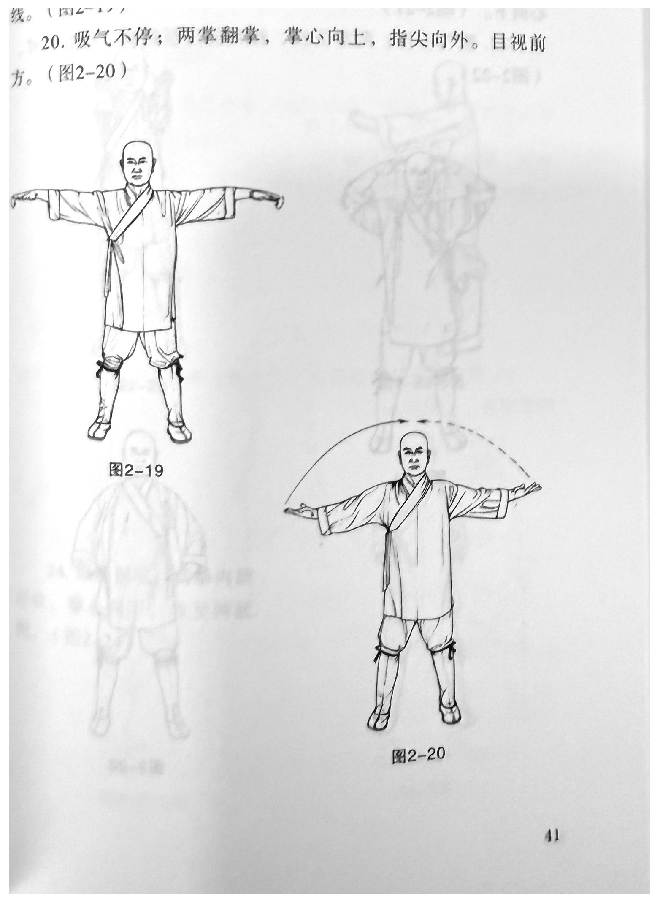
Raise both open hands and bring them inward toward one another to a position above and in front of the forehead, fingertips facing each other and palms facing down. (Figure 2-21.)
Press both open hands downward, passing in front of the chest and continuing to the sides of the waist, with the fingertips facing one another. (Figure 2-22.)
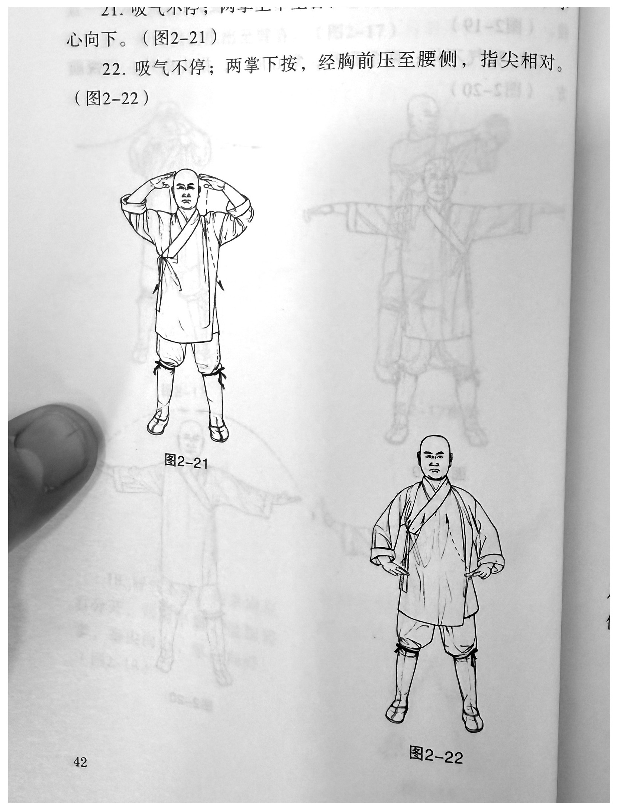
Close both open hands into fists and raise them forward, keeping the straight arms level with the shoulders and the palm sides of the fists facing up. (Figure 2-23.)
Turn both fists inward and then draw them back, with the palm sides of the fists facing down, until they reach the two sides of the waist. (Figure 2-24.)
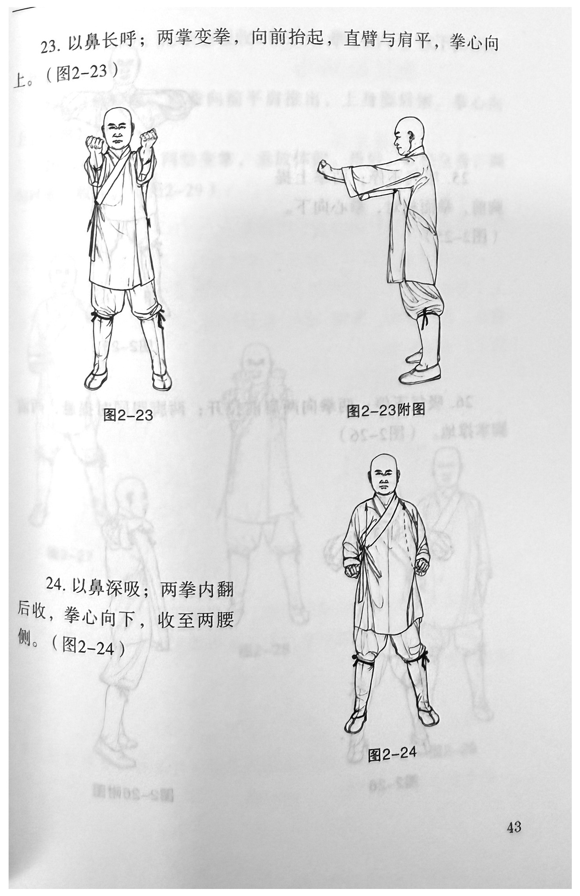
Lift both fists in front of the chest, with the fist faces—the knuckle surfaces—facing one another and the palm sides of the fists facing down. (Figure 2-25.)
Pull the two fists apart to positions in front of the shoulders. At the same time, raise both heels clear of the ground and support the body through the forefeet—the balls of the feet. (Figure 2-26.)
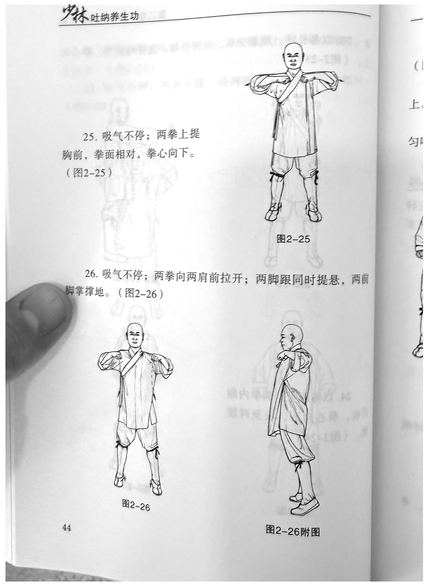
Slowly draw both fists back to the waist, with the palm sides of the fists facing down; lower the heels. (Figure 2-27.)
Push both fists forward at shoulder height, inclining the upper body slightly backward, with the palm sides of the fists facing up. (Figure 2-28.)
Open both fists into open hands and lower them to hang at the sides of the body. Finally, relax the whole body, regulate the breathing until it is even, and close the form. (Figure 2-29.)
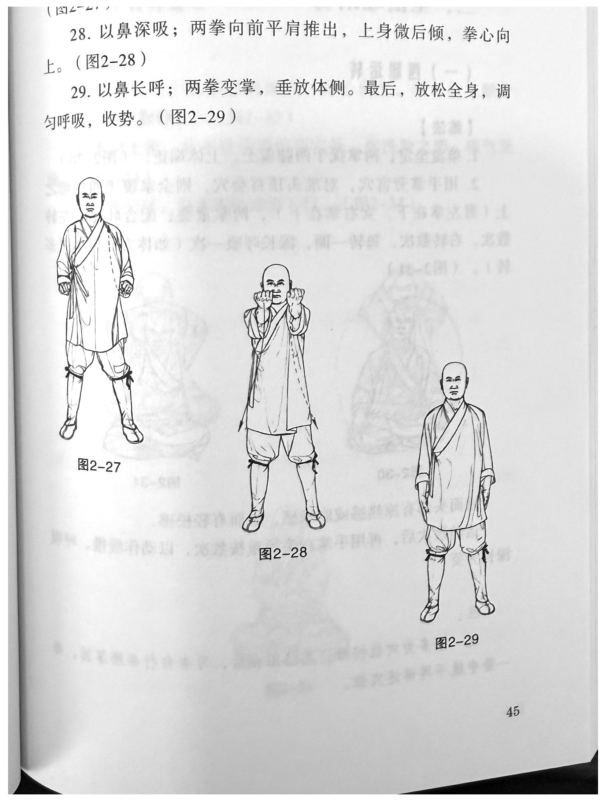